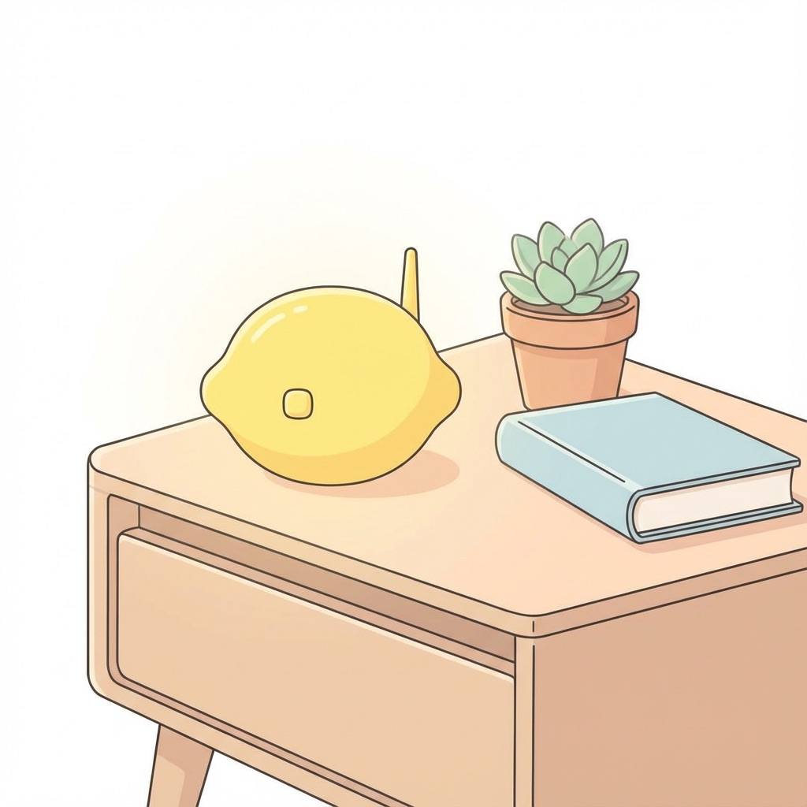
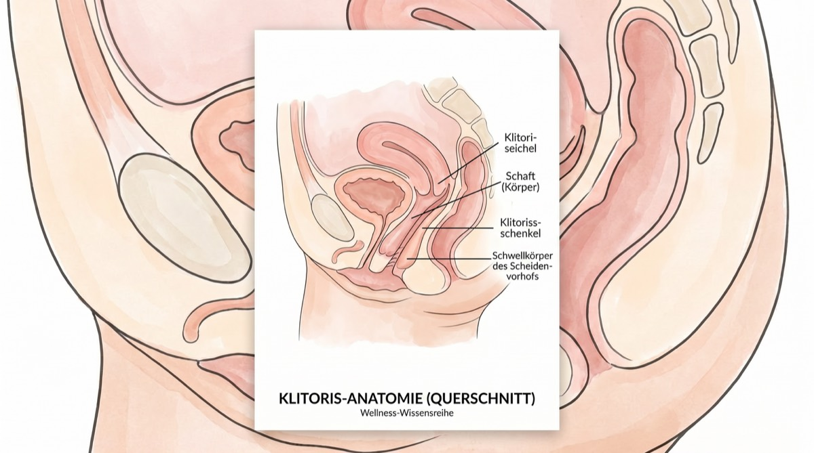
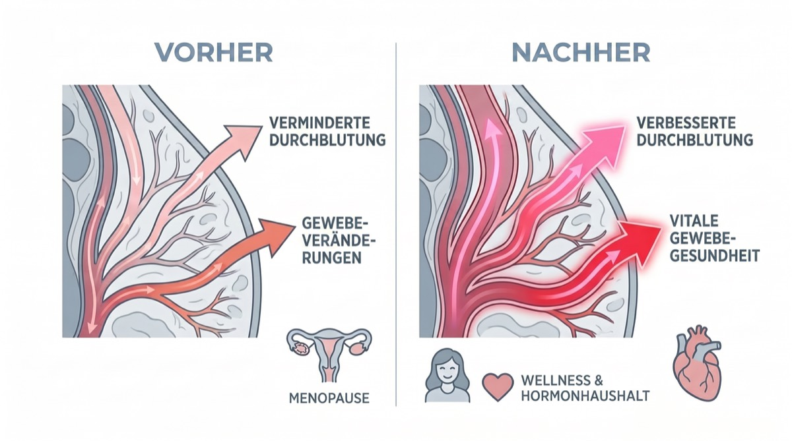
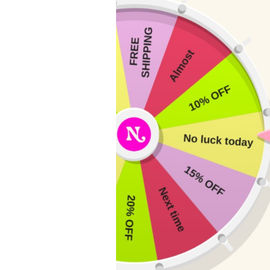
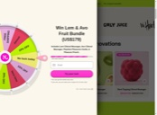

Warum wir darüber sprechen
Als unser Redaktionsteam zum ersten Mal von einem „zitronenförmigen Wellnessgerät“ hörte, das die Menopause-Community im Sturm erobert, waren wir, ganz ehrlich, skeptisch. Aber nachdem wir Dutzende Frauen interviewt, Gynäkologen befragt und es ja, auch selbst getestet haben, verstehen wir den Hype.
Das ist nicht einfach nur ein weiterer Wellness-Trend. Es geht um ein echtes medizinisches Problem, das Millionen Frauen betrifft und über das trotzdem kaum jemand spricht: Klitorisatrophie und der Verlust des sexuellen Wohlbefindens während der Menopause.
Das Gespräch, vor dem uns niemand gewarnt hat
Über die Hitzewallungen, die uns um 3 Uhr morgens durch die Seidenlaken schwitzen lassen, reden alle. Über den Gehirnnebel, der uns die Brille suchen lässt, während sie längst auf der Nase sitzt, auch.
Aber niemand setzt sich mit einem Glas Pinot zu dir und flüstert: „Hey, übrigens, wenn du da unten nicht aktiv bleibst, kann deine Klitoris tatsächlich schrumpfen.“
Das nennt sich Klitorisatrophie und ist Teil des urogenitalen Menopausensyndroms (GSM) – einer Erkrankung, die laut der North American Menopause Society bis zu 50 % der Frauen nach der Menopause betrifft.
„Die große Entfremdung“
Für viele Frauen, die wir interviewt haben, war es nicht nur die Trockenheit. Es war die Taubheit. Eine Testerin erzählte, wie sie ihren alten Vibrator aus ihren Dreißigern wieder hervorholen wollte: „Statt sich gut anzufühlen, war es einfach … unangenehm. Oder taub. Als würde man versuchen, eine Hornhaut zu kitzeln.“
Mediziner erklären, dass klassische Vibratoren über Reibung und Druck wirken. Wenn das Gewebe durch niedriges Östrogen dünner wird, kann direkte Vibration die Nerven sogar weiter abstumpfen, was zu genau diesem „tauben“ Gefühl führt.
„Hör auf zu vibrieren. Fang an zu saugen.“
– Beckenbodenspezialisten
Gynäkologen, die auf die Menopause spezialisiert sind, erklären: „Wenn das Östrogen sinkt, nimmt die Durchblutung im Beckenbereich ab. Das führt zu dünnerem Gewebe, Elastizitätsverlust und nachlassender Empfindung. In der Medizin nennt man das das ‚Use it or lose it’-Prinzip – du brauchst eine konstante Durchblutung, um das Gewebe gesund zu halten.“
Auftritt für den Nancy's Lem
Hier kommt dieses kleine gelbe Gerät ins Spiel. Der Nancy's Lem wird nicht als Sextoy vermarktet, sondern als Wellnessgerät. Und nach unserer Recherche verstehen wir auch, warum.
Anders als klassische Vibratoren, die auf Reibung setzen (was dünner gewordenes Gewebe in den Wechseljahren reizen kann), arbeitet der Lem mit sogenannter Druckwellen-Technologie. Stell dir den Unterschied so vor: einmal Sandpapier auf der Haut, einmal eine sanfte Vakuummassage.
Die Wissenschaft: warum Druckwellen-Technologie funktioniert
❌ Klassische Vibratoren:
Setzen auf Reibung an der Oberfläche, die empfindliches, dünner gewordenes Gewebe reizen kann. Das kann Taubheit oder Mikrorisse verursachen.
✓ Druckwellen-Technologie:
Erzeugt sanfte Saugwellen ganz ohne direkten Kontakt. Sie zieht sauerstoffreiches Blut ins Gewebe und fördert so Gesundheit und Empfindung.
So funktioniert es: Der Lem legt sich sanft um die Klitoris und stimuliert sie mit Druckwellen – ein Gefühl wie bei Oralsex, nur gleichmäßig und unermüdlich. Und weil es keine Reibung gibt, gibt es auch keinerlei Reizung.
Die eigentliche Magie steckt aber in der Physik: Dieser sanfte Sog erzeugt einen Vakuumeffekt, der tiefes, sauerstoffreiches Blut ins Gewebe zieht. Er weckt Nerven, die jahrelang geschlafen haben.
„Es fühlt sich an, als würde er den Orgasmus direkt herausziehen … und das Pochen hält viel länger an.“
– Alisha, Beta-Testerin (aus verifizierten Kundenbewertungen)
Wie er abschneidet: unser Vergleich
Wir haben den Lem mit den üblichen Lösungen für die Gewebegesundheit in den Wechseljahren verglichen
| Merkmal | Nancy's Lem | Traditioneller Vibrator | Östrogencreme |
|---|---|---|---|
| Funktioniert für empfindliches Gewebe | ✅ Ja | ❌ Kann reizen | ⚠️ Langsame Ergebnisse |
| Erhöht die Durchblutung | ✅ Tiefengewebe | ⚠️ Nur Oberfläche | ✅ Allmählich |
| Keine Reibung/Reizung | ✅ Null Kontakt | ❌ Verursacht Reibung | ✅ Ja |
| Sofortiger Genuss | ✅ Sofort | ⚠️ Unterschiedlich | ❌ Kein Genuss |
| Diskretes Design | ✅ Sieht aus wie Zitrone | ❌ Offensichtlich | ✅ Ja |
| Von Ärzten empfohlen | ✅ Für Durchblutung | ⚠️ Manchmal | ✅ Ja |
| Preis | 77,95 € (einmalig) | 50–150 € | 30–50 €/Monat |
Die „Anti-Scham“-Designphilosophie
Eines ist unserem Redaktionsteam beim Testen besonders aufgefallen: Das Design ist ganz bewusst diskret. Leuchtend gelb, passt in die Handfläche und sieht wirklich aus wie eine dekorative Zitrone.
Der „Nachttisch-Test“

Wir alle haben diese eine Schublade. Die Schublade der Schande. In der wir die unansehnlichen, phallischen Plastikgeräte unter alten Socken verstecken.
Eine unserer Testerinnen hat uns das hier erzählt: „Ich hatte meinen Lem aus Versehen auf dem Badezimmerschrank liegen lassen, als meine Schwiegermutter zu Besuch war. Sie hat ihn in die Hand genommen und gesagt: ‚Oh, ist das so ein neuer Schall-Gesichtsreiniger? Der fühlt sich so weich an!’“
Er besteht den Nachttisch-Test. Er sieht aus wie hochwertige Self-Care-Technik, nicht wie ein Sextoy. Denn genau das ist er ja auch.
⚠️ Warnung vor billigen Nachahmungen
Nach unserem ersten Testbericht haben Leserinnen gefragt, warum sie nicht einfach die 20-Euro-Version bei Amazon nehmen sollten. Eine Gynäkologin hat uns davon abgeraten.
„Billige Toys bestehen aus porösem Jelly oder TPE“, warnte sie. „Mikroskopisch kleine Bakterien setzen sich in den Poren fest – ein enormes Risiko gerade für Frauen in den Wechseljahren, die ohnehin anfälliger für Harnwegsinfekte sind.“
Der Hello Nancy Lem besteht zu 100 % aus medizinischem, porenfreiem Silikon. Riskiere nicht deine Gesundheit, nur um ein paar Euro zu sparen.
Flüsterleise
Ultraleiser Motor für vollständige Diskretion
Wasserdicht (IPX7)
Perfekt für Bad oder Dusche
Medizinisches Silikon
Körperfreundlich, porenfrei, leicht zu reinigen
Magnetisches Laden
120 Minuten pro Ladung
Produktgalerie
Das Unboxing: der erste Eindruck zählt
Eines der ersten Dinge, die unseren Testerinnen aufgefallen sind? Die Verpackung ist edel. Keine grellen Farben, keine peinlichen Bilder. Die Box ist schlicht weiß mit dezenten Goldakzenten – man könnte sie glatt für ein hochwertiges Hautpflegeprodukt halten.
Was ist in der Box:
- Das Lem-Gerät (leuchtend gelb, handflächengroß)
- Magnetisches USB-Ladekabel
- Weicher Samt-Aufbewahrungsbeutel (perfekt für Reisen)
- „Selbstliebe-Handbuch“ mit Anwendungstipps und Wellness-Ratschlägen
- Schnellstartanleitung mit illustrierten Anweisungen
„Als ich die Box geöffnet habe, war ich echt überrascht, wie hochwertig sich alles angefühlt hat. Es hat sich nicht wie ein ‚Sextoy’ angefühlt, sondern wie eine Wellness-Investition.“ – Testerin, 54 Jahre
Reden wir über Anatomie: warum Klitorisstimulation wichtig ist

Die Wissenschaft des Vergnügens
Was jede Frau über ihren Körper wissen sollte
Hier ist etwas, das im Gesundheitsunterricht nie zur Sprache kommt: Die Klitoris hat rund 8.000 Nervenenden – mehr als jeder andere Teil des menschlichen Körpers, egal ob bei Frau oder Mann. Zum Vergleich: Der Penis hat etwa 4.000.
Aber jetzt kommt der Haken: 75 % der Frauen können allein durch Penetration nicht zum Orgasmus kommen – so eine Studie aus dem Journal of Sex & Marital Therapy. Der Schlüssel ist die Klitoris.
Was während der Menopause passiert:

❌ Das Problem:
- • Östrogenspiegel sinkt um 90 %
- • Durchblutung im Beckenbereich nimmt ab
- • Klitorisgewebe kann um 20–30 % schrumpfen
- • Nervenempfindlichkeit nimmt ab
- • Natürliche Lubrikation nimmt ab
✓ Die Lösung:
- • Regelmäßige Stimulation erhält die Durchblutung
- • Hält Nervenbahnen aktiv
- • Verhindert Gewebeatrophie
- • Erhält die Empfindlichkeit
- • Fördert natürliche Lubrikation
Gynäkologen sagen es ganz unverblümt: „Stell es dir wie Training für deinen Beckenboden vor. Wenn du diese Muskeln nicht benutzt und die Durchblutung nicht in Gang hältst, verkümmern sie. Beim Klitorisgewebe gilt genau dasselbe Prinzip.“
💡 Das Fazit:
Bei regelmäßiger Klitorisstimulation geht es nicht nur um Genuss (auch wenn der ein schöner Bonus ist). Es geht darum, das Gewebe gesund zu halten, die Nervenfunktion zu bewahren und die irreversiblen Veränderungen zu verhindern, die mit Vernachlässigung einhergehen. Das ist echte Gesundheitsvorsorge.
„Aber was ist mit meinem Partner?“ Das haben wir uns auch gefragt
Das „3-Minuten-Wunder“ (und warum Partner es lieben)
Mal ehrlich: Bei vielen Frauen über 50 dauert es 20 Minuten und mehr (plus jede Menge Kopfkino), um überhaupt in die Nähe eines Höhepunkts zu kommen. Mit dem Lem? Drei Minuten.
Der größte Einwand, den Frauen haben: „Wird sich mein Partner ersetzt fühlen?“
Überhaupt nicht. Der Lem ist winzig. Viele Paare benutzen ihn sogar während des Sex. Er wirkt wie eine „Brücke“, die dafür sorgt, dass du voll erregt und ganz natürlich feucht bist – und nimmt deinem Partner den Druck, „abliefern“ zu müssen.
Eine Testerin hat uns erzählt: „Es hat unser Schlafzimmer von einem Ort der Anspannung zurück in einen Spielplatz verwandelt.“
Eine der häufigsten Fragen während unserer Recherche war: „Wird sich mein Partner dadurch bedroht fühlen?“
Und das haben wir herausgefunden: Der Lem ist kein Ersatz, sondern eine Bereicherung. Viele Paare, die wir interviewt haben, berichteten, dass der Lem ihre intimen Momente sogar enger gemacht hat.
„Mein Mann war neugierig, nicht bedroht. Inzwischen setzt er ihn beim Vorspiel bei mir ein. Ihm nimmt es den Druck, ‚abliefern’ zu müssen, und ich bekomme genau das, was ich brauche. Für beide ein Gewinn.“
– Valeria, 55, seit 28 Jahren verheiratet
Durch seine kompakte Größe lässt er sich ganz leicht zu zweit einsetzen, ohne sperrig zu wirken. Und weil er einmal richtig platziert freihändig funktioniert, können sich beide ganz aufeinander konzentrieren.
Wie Paare den Lem nutzen:
Während des Vorspiels
Dein Partner hält ihn beim Küssen und Streicheln einfach an Ort und Stelle
Während des Geschlechtsverkehrs
So platziert, dass Klitoris und Penetration gleichzeitig stimuliert werden
Solo, während der Partner zuschaut
Schafft Nähe – und dein Partner lernt ganz nebenbei, was dir guttut
„Pflege“ zwischendurch
Die Solo-Nutzung hält das Gewebe gesund, wenn Sex zu zweit gerade selten ist
Profi-Tipp: Reden ist alles. Sieh ihn als Wellness-Tool, das beiden guttut – es nimmt Druck und steigert den Genuss.
Jeder Grund, es zu versuchen – keiner, sich zu sorgen
Wir haben uns die Garantien von Hello Nancy genau angesehen. Das steckt wirklich dahinter.
30-Tage-„Genussgarantie“
Nicht zufrieden? Du bekommst dein Geld komplett zurück – ganz ohne Rücksendung. Sie verlassen sich auf deine Ehrlichkeit. So überzeugt sind sie.
Heißt: kein finanzielles Risiko. Probier ihn doch einen Monat lang aus.
12 Monate Garantie
Sollte im ersten Jahr etwas mit dem Gerät nicht stimmen, ersetzen sie es. Kostenlos. Ohne Wenn und Aber.
Heißt: Das ist kein Wegwerf-Gadget, sondern für die Ewigkeit gebaut.
Lebenslanger Support
Fragen zur Anwendung? Unsicher beim Reinigen? Das Kundenservice-Team antwortet innerhalb von 24 Stunden.
Heißt: Du kaufst nicht einfach ein Produkt. Du wirst Teil einer Community.
Die eigentliche Frage: Was hast du zu verlieren?
Wir haben dir die Wissenschaft erklärt, die Bewertungen gezeigt und die Garantien aufgeschlüsselt. Das einzige Risiko, das jetzt noch bleibt, ist, es nicht zu versuchen.
Rechnen wir mal nach:
Wenn du es versuchst:
- ✓ Du entdeckst vielleicht Genuss wieder, den du längst verloren glaubtest
- ✓ Du verbesserst womöglich die Gewebegesundheit und beugst der Atrophie vor
- ✓ Du schläfst vielleicht besser (Orgasmen setzen Oxytocin frei)
- ✓ Schlimmstenfalls: Du bekommst deine 77,95 € zurück
Wenn du es lässt:
- • Die Gewebeatrophie schreitet weiter fort
- • Die Empfindsamkeit der Nerven lässt weiter nach
- • Das sexuelle Wohlbefinden bleibt ein Kampf
- • Du wirst dich immer fragen: „Was wäre, wenn?“
Warum Hello Nancy unser Vertrauen hat
Wir empfehlen Produkte nicht einfach so. Deshalb hat Hello Nancy unsere redaktionellen Standards erfüllt.
Preisgekrönt
2025 Women's Wellness Tech Award vom International Wellness Institute
Verifizierte Bewertungen
4,7★ im Schnitt von 14.907 verifizierten Käuferinnen (keine gefälschten Bewertungen)
1 Mio.+ Verkauft
Über 1.000.000 Einheiten weltweit seit dem Start im Jahr 2023 verkauft
Medizinische Qualität
Medizinisches Silikon, strenge Sicherheitsprüfungen
Bekannt aus:

